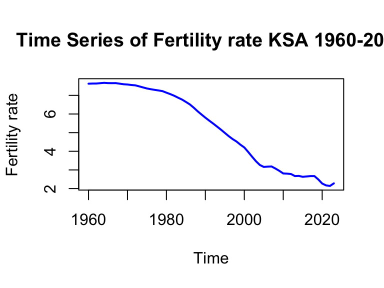
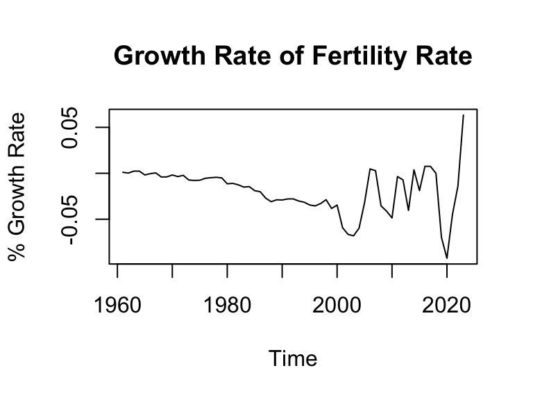
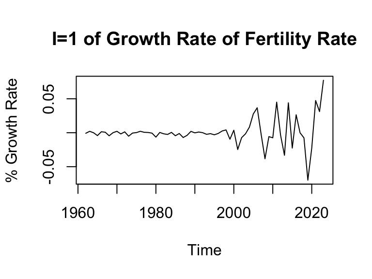
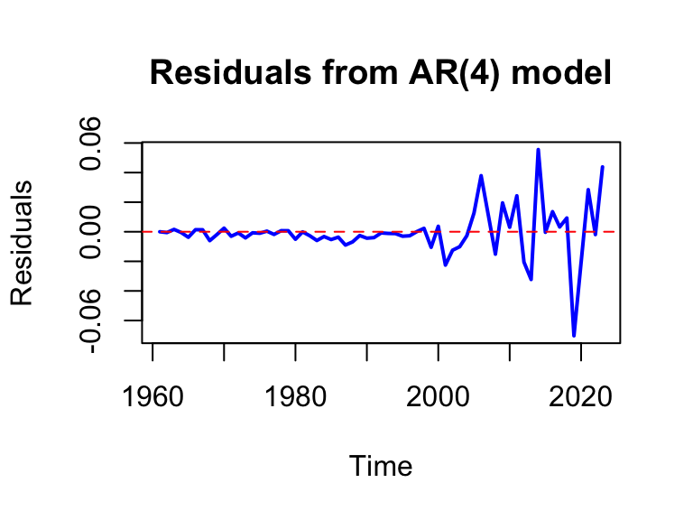
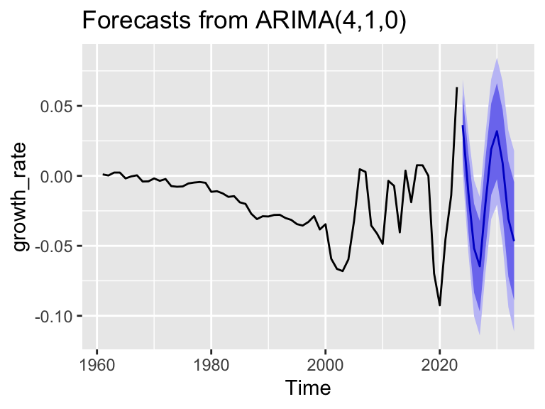

Report “Fertility Rate Forecasting for Saudi Arabia”
Introduction
Over the past six decades, Saudi Arabia has undergone one of the most rapid fertility transitions in the world. In the 1960s, the fertility rate was nearly eight children per woman, largely driven by the country’s conservative and religious social structure. In contrast, recent decades have seen a dramatic decline, with fertility rates falling to around two children per woman. This sharp reduction can be attributed to sweeping socio-economic reforms, including the expansion of women’s education, shifts in female labor market participation, and broader societal transformations under Vision 2030.
This project aims to analyze and forecast Saudi Arabia’s fertility rate using the ARIMA model. By modeling historical trends and projecting future changes, the study seeks to shed light on the potential implications of fertility dynamics for labor market policies and broader social development strategies in Saudi Arabia.
Definition & Data Source
The Total Fertility Rate (TFR) measures the average number of children a woman would have over her lifetime if she were to experience the current age-specific fertility rates throughout her childbearing years. It is expressed as the number of births per woman in a given year.
For this study, the analysis covers the period 1960–2023, utilizing annual data obtained from the World Bank Open Data platform. The dataset provides consistent and internationally comparable fertility indicators, making it a reliable source for examining long-term demographic trends in Saudi Arab
Methodolgy
To drive the forecasting model we will transform the dataset from fertility rate to growth rate of fertility rate by using this equation: \[ \text{Growth Rate}_t = \Delta \ln(\text{Fertility Rate}_t) \] Additionally, we will conduct differencing to the series with (I=1), to make the series stationary. Finally, we chose AR(4) for this analysis because it passed all the tests.
Diagnosing
To start the analysis, Referring to the figure below, the series seems to have a severe downward trend, and a severe variance as well. This is an indication that the series isn’t stationary.
Data Processing
To overcome this nonstationarity, The series will be transformed from Fertility Rate to The Growth Rate of The Fertility Rate following this equation:
\[ \text{Growth Rate}_t = \Delta \ln(\text{Fertility Rate}_t) \]
By doing this, the graph looks way better as shown below. However, the series still looks non-stationary, and to confirm these I conducted both ADF & DF-GLS to check for stationarity.

In this report I will focus more on DF-GLS since it is more accurate and the results are below.
| Test | Statistic |
|---|---|
| DF-GLS | -0.905 |
The DF-GLS absolute value of test statistic is 0.905 and it is < 1.96. This confirms the null hypothesis of non-stationarity.
Differncing
Now to make the series stationary, differencing is required. We will start by taking the first difference (I=1)

The series looks way better than before, and potentially stationary. However, the variance still a concern that might result in heteroskedasticity. Now, to proceed forward same test of stationarity will be conducted
| Test | Statistic |
|---|---|
| DF-GLS | -2.411 |
The DF-GLS absolute value of test statistic is 2.411 and it is > 1.96. This rejects the null hypothesis of non-stationarity, and accept that the series is stationary now.
ARIMA modeling
To start, we know that our ARIMA model has (I=1) now. To choose the proper model and the respective values of (p,q), I have tested and trialed multiple models and combinations of (p,q). Referring to the table below, we can see the different models I have tested:
| AR(1) | ARMA(1,1) | AR(2) | AR(4) | |
|---|---|---|---|---|
| Theta1.SE. | 0.15 (0.142) | 0.079 (0.455) | 0.153 (0.142) | -0.148 (0.131) |
| Theta2.SE. | N/A | N/A | -0.059 (0.144) | -0.174 (0.122) |
| Theta3.SE. | N/A | N/A | N/A | -0.462 (0.121) |
| Theta4.SE. | N/A | N/A | N/A | -0.513 (0.128) |
| Phi1.SE. | N/A | 0.074 (0.431) | N/A | N/A |
| AICc | -303.789 | -301.609 | -301.748 | -318.458 |
| BIC | -299.738 | -295.642 | -295.780 | -308.894 |
| LB8.p.value. | 17.1 ( 0.01679 ) | 17.24 ( 0.0159 ) | 17.92 ( 0.00643 ) | 7.97 ( 0.09276 ) |
| LB16.p.value. | 28.76 (0.01729) | 28.9 (0.01655) | 29.67 (0.00847) | 17.14 (0.14428) |
To give a context, my series has 64 observation and the reason I chose 16 lags for the Ljung–Box test is because that N/4 = 16.
After running multiple tests and iterations for the ARIMA models (1,1,0),(2,1,0),(1,1,1), and (4,1,0) we saw that:
– ARIMA(1,1,0): This model gave good results for AICc, BIC. However, it rejects the null hypothesis of Box-Ljung that the time series acts as a white noise. so the model is inadequate for the analysis
– ARIMA(1,1,1): This model gave good results for AICc, BIC. However, it rejects the null hypothesis of Box-Ljung that the time series acts as a white noise. so the model is inadequate for the analysis
– ARIMA(2,1,0): This model gave good results for AICc, BIC. However, it rejects the null hypothesis of Box-Ljung that the time series acts as a white noise. so the model is inadequate for the analysis
– AR(4,1,0): This model gave superior results for all the test, and most importantly, if failed to reject the null hypothesis of Box-Ljung, making the assumption of the time series acting as a white noise still stands.
AR(4)
To proceed forward, now we have to examine the model to properly assess any potential risks.
Coefficients
To start with the basics, we need to see if the necessary & sufficient conditions are met or not.
– Sum of Coefficients = -1.297 .
– Sum of absolute values of Coefficients = 1.297
So for both condition, we can’t entail anything about the process. the necessary condition wasn’t violated, and the sufficient condition wasn’t met.
Residual Plot
The residual plot fluctuate around a mean = 0 which is good. However, we can observe that the variance has changed around 2000 and later meaning the series doen’t have a constant variance anymore.

ACF & PACF
The graphs is perfect, nothing violating the significance level interval.

Heteroskedasticity Test
The concerns for heteroskedasticity is still valid, and to confirm that I decided to conduct ARCH Engle’s Test for Residual Heteroscedasticity.
| ARCH.LM.test | |
|---|---|
| P-Value | 2.33e-05 |
The ARCH Engle’s test statistic has a p-value of 0 and it is < 0.05. This rejects the null hypothesis of ARCH effect, and confirming that the series has Heteroskedasticity.
To obtain a unbiased, one must use GARCH-Model in this case to capture this variance correctly. However, the results of the ARIMA model would still generate good results at least for the short run.
Forecasting

| Year | Forecasted_Growth | Forecasted_Fertility |
|---|---|---|
| 2024 | 0.0363 | 2.363 |
| 2025 | -0.0119 | 2.335 |
| 2026 | -0.0517 | 2.214 |
| 2027 | -0.0646 | 2.071 |
| 2028 | -0.0196 | 2.030 |
| 2029 | 0.0191 | 2.069 |
| 2030 | 0.0319 | 2.135 |
| 2031 | 0.0091 | 2.154 |
| 2032 | -0.0307 | 2.088 |
| 2033 | -0.0466 | 1.991 |
Conclusion
In this paper, we employed the ARIMA modeling approach to forecast the fertility rate in Saudi Arabia. The analysis began by transforming the data into the growth rate of the fertility rate and applying differencing to achieve stationarity. To identify the most suitable model, we evaluated several diagnostic criteria, including the Akaike Information Criterion (AICc), Bayesian Information Criterion (BIC), and the Autocorrelation (ACF) and Partial Autocorrelation (PACF) functions, alongside the Box–Ljung test. Based on these diagnostics, the AR(4) model was selected as the best-fitting specification.
Using this model, we generated forecasts for both the growth rates and the fertility rates. However, the residual analysis revealed evidence of heteroskedasticity, suggesting that future work could benefit from applying a GARCH model to better capture the observed volatility in the series and improve the accuracy of the forecasts.